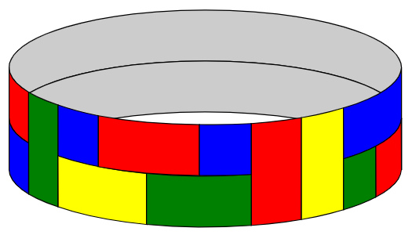
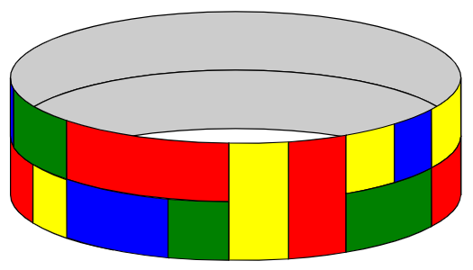

A certain type of flexible tile comes in three different sizes - 1×1, 1×2, and 1×3 - and in different colours. There is an unlimited number of tiles available in each combination of size and colour.
These are used to tile a closed loop of width and length (circumference) , where is a positive integer, subject to the following conditions:
- The loop must be fully covered by non-overlapping tiles.
- It is not permitted for four tiles to have their corners meeting at a single point.
- Adjacent tiles must be of different colours.
For example, the following is an acceptable tiling of a loop with (blue, green, red and yellow):

but the following is not an acceptable tiling, because it violates the "no four corners meeting at a point" rule:

Let be the number of ways the loop can be tiled subject to these rules when colours are available. (Not all colours have to be used.) Where reflecting horizontally or vertically would give a different tiling, these tilings are to be counted separately.
For example, , , and .
Find .